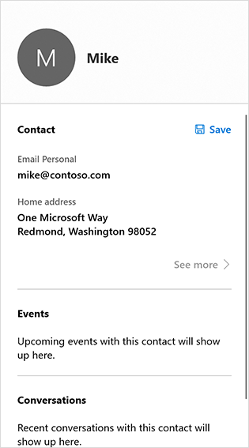
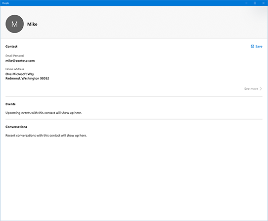

Contact card
The contact card displays contact information, such as the name, phone number, and address, for a Contact (the mechanism Windows uses to represent people and businesses). The contact card also lets the user edit contact info. You can choose to display a compact contact card, or a full contact card that contains additional information.
Important APIs: ShowContactCard method, ShowFullContactCard method, IsShowContactCardSupported method, Contact class
There are two ways to display the contact card:
- As a standard contact card that appears in a flyout that is light-dismissable--the contact card disappears when the user clicks outside of it.
- As a full contact card that takes up more space and is not light-dismissable--the user must click close to close it.


Is this the right control?
Use the contact card when you want to display contact info for a contact. If you only want to display the contact's name and picture, use the person picture control.
Show a standard contact card
Typically, you show a contact card because the user clicked something: a button or perhaps the person picture control. We don't want to hide the element. To avoid hiding it, we need to create a Rect that describes the location and size of the element.
Let's create a utility function that does that for us--we'll use it later.
// Gets the rectangle of the element public static Rect GetElementRectHelper(FrameworkElement element) { // Passing "null" means set to root element. GeneralTransform elementTransform = element.TransformToVisual(null); Rect rect = elementTransform.TransformBounds(new Rect(0, 0, element.ActualWidth, element.ActualHeight)); return rect; }Determine whether you can display the contact card by calling the ContactManager.IsShowContactCardSupported method. If it's not supported, display an error message. (This example assumes that you'll be showing the contact card in response to a click event .)
// Contact and Contact Managers are existing classes private void OnUserClickShowContactCard(object sender, RoutedEventArgs e) { if (ContactManager.IsShowContactCardSupported()) {Use the utility function you created in step 1 to get the bounds of the control that fired the event (so we don't cover it up with the contact card).
Rect selectionRect = GetElementRect((FrameworkElement)sender);Get the Contact object you want to display. This example just creates a simple contact, but your code should retrieve an actual contact.
// Retrieve the contact to display var contact = new Contact(); var email = new ContactEmail(); email.Address = "jsmith@contoso.com"; contact.Emails.Add(email);Show the contact card by calling the ShowContactCard method.
ContactManager.ShowFullContactCard( contact, selectionRect, Placement.Default); } }
Here's the complete code example:
// Gets the rectangle of the element
public static Rect GetElementRect(FrameworkElement element)
{
// Passing "null" means set to root element.
GeneralTransform elementTransform = element.TransformToVisual(null);
Rect rect = elementTransform.TransformBounds(new Rect(0, 0, element.ActualWidth, element.ActualHeight));
return rect;
}
// Display a contact in response to an event
private void OnUserClickShowContactCard(object sender, RoutedEventArgs e)
{
if (ContactManager.IsShowContactCardSupported())
{
Rect selectionRect = GetElementRect((FrameworkElement)sender);
// Retrieve the contact to display
var contact = new Contact();
var email = new ContactEmail();
email.Address = "jsmith@contoso.com";
contact.Emails.Add(email);
ContactManager.ShowContactCard(
contact, selectionRect, Placement.Default);
}
}
Show a full contact card
To show the full contact card, call the ShowFullContactCard method instead of ShowContactCard.
private void onUserClickShowContactCard()
{
Contact contact = new Contact();
ContactEmail email = new ContactEmail();
email.Address = "jsmith@hotmail.com";
contact.Emails.Add(email);
// Setting up contact options.
FullContactCardOptions fullContactCardOptions = new FullContactCardOptions();
// Display full contact card on mouse click.
// Launch the People’s App with full contact card
fullContactCardOptions.DesiredRemainingView = ViewSizePreference.UseLess;
// Shows the full contact card by launching the People App.
ContactManager.ShowFullContactCard(contact, fullContactCardOptions);
}
Retrieving "real" contacts
The examples in this article create a simple contact. In a real app, you'd probably want to retrieve an existing contact. For instructions, see the Contacts and calendar article.